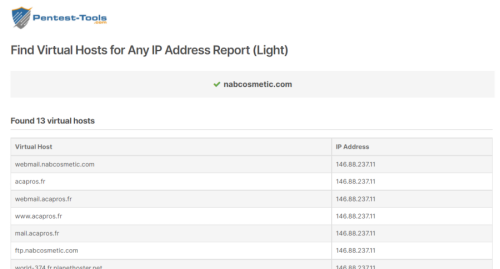

Virtual Hosts
We can find if a domain we are targeting is configured as
a Virtual Host by using
•
Pentest-Tools: https://pentest-tools.com/information-gathering/find-virtual-hosts#
Command line (not
tested)•
VHostScan by
Codingo•
Virtual-host-discovery by
Jobertabma•
Gobuster by
OJ